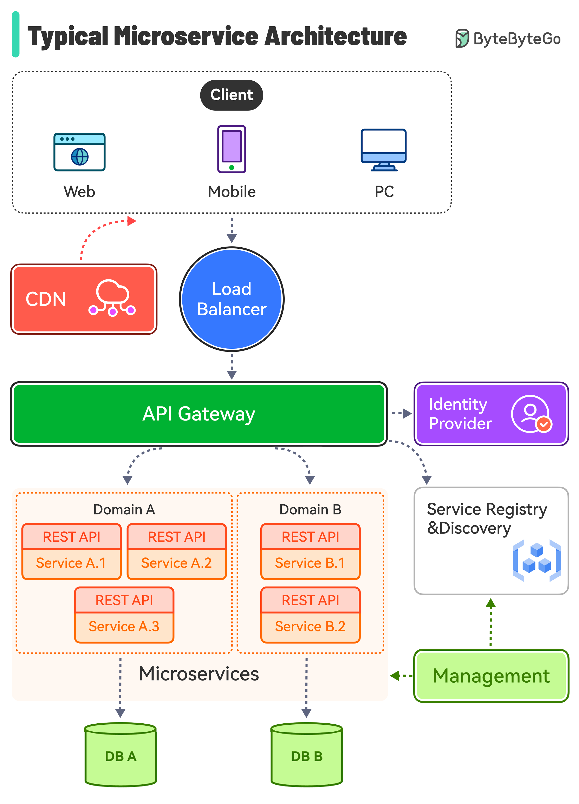

When modern web platforms scale from thousands to millions of concurrent users, the underlying architecture faces an existential stress test. Monolithic applications frequently choke on memory contention and database bottlenecks, while naive microservice migrations often result in distributed monoliths with cascading failures. At Rynex Tech, our engineering squads pair the lightweight concurrency of Go with the orchestration power of Kubernetes to build backends that remain rock-solid under enterprise load.
Executive Takeaways
- Go for Low-Footprint Concurrency: Goroutines consume only 2KB of initial stack space versus 1MB for OS threads, allowing a single 2-core node to comfortably manage 50,000+ simultaneous connections with microsecond response times.
- Zero-Downtime Rollouts: Kubernetes rolling update strategies, paired with smart readiness probes and SIGTERM lifecycle handlers in Go, guarantee zero dropped packets during production deployments.
- Graceful Degradation over Outages: Implement circuit breakers (Sony/gobreaker), rate limiters, and exponential backoff retry policies to isolate external third-party failures before they cascade to your primary customer journey.
- Cost Efficiency & Auto-Scaling: Go's ultra-compact static binaries (15–30MB container images) boot in milliseconds, enabling Kubernetes Horizontal Pod Autoscaling (HPA) to react to sudden surges in seconds rather than minutes.
1. Why Go is the Preferred Engine for Microservices
When building independent services that must communicate constantly over gRPC and HTTP/2, raw CPU efficiency and memory economy are paramount. In languages with heavy runtime footprints or heavy garbage collectors, container overhead can quickly inflate your AWS or GCP monthly bill.
Go compiles directly into a standalone static binary with zero external OS dependencies. A minimal distroless Docker image containing a production Go microservice weighs less than 25MB, boots in 15 milliseconds, and consumes less than 30MB of RAM at baseline idle.
2. Kubernetes Orchestration: Pod Health and Graceful Termination
A microservice is only as resilient as its contract with the orchestrator. If a pod is killed abruptly while processing an active in-flight request, users experience broken checkouts, incomplete database transactions, or 502 Bad Gateway errors.
To ensure seamless rolling deployments, our Go services intercept `SIGTERM` signals, drain active connections over a preStop buffer window, and expose differentiated `/healthz` (liveness) and `/readyz` (readiness) endpoints to kubelet.
3. Preventing Cascading Failures with Circuit Breakers
In a distributed architecture, if Service C becomes slow or unresponsive, Service B will queue worker threads waiting for responses, quickly exhausting its connection pools and bringing down Service A in a domino effect.
We implement circuit breakers with three distinct states: Closed (normal), Open (immediate fail-fast returning fallback cache data), and Half-Open (controlled probe requests to test upstream recovery). This pattern preserves the core user experience even during partial cloud outages.
4. Distributed Tracing and OpenTelemetry
Debugging distributed services without end-to-end tracing is nearly impossible. By injecting OpenTelemetry trace IDs and span contexts into gRPC metadata and HTTP headers, engineering teams can pinpoint a single millisecond bottleneck across a mesh of 20 microservices within seconds.